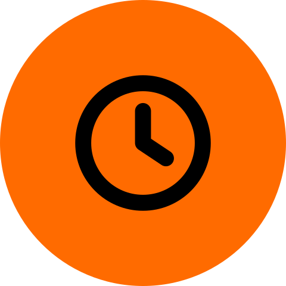
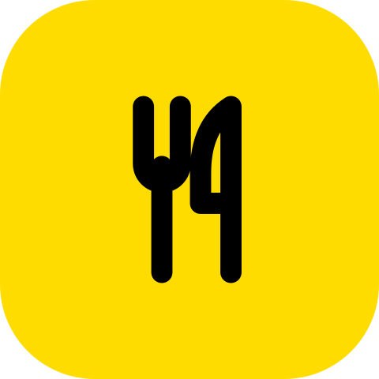
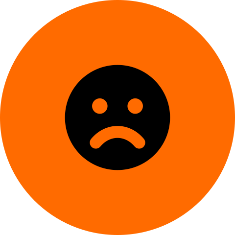
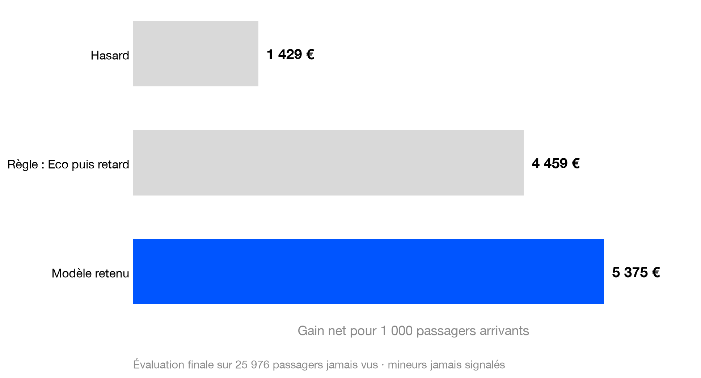
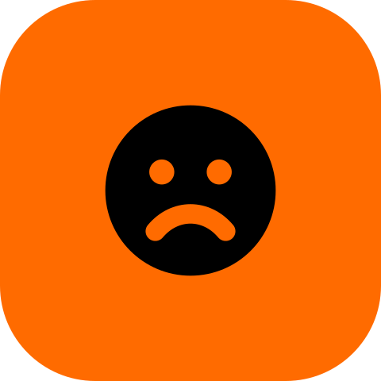
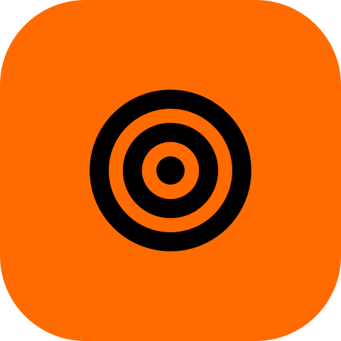

Format 16:9 (1920 × 1080). Icônes : charte/icones/. Couleurs et règles : charte/CHARTE.md.




des passagers signalés seraient mineurs sans précaution
après exclusion des mineurs du signalement
de gain seulement : la protection des enfants coûte peu

mecontent
cible